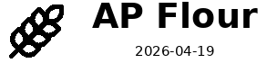
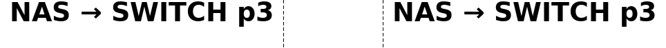
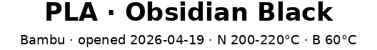

“Label this jar ‘oats’, expires November 2026, with a little wheat icon.”

1 label · kitchen / pantry_jar · 12 mm
harteWired Lab · brother-ptouch-automation
Tell Claude — in plain English, from your phone or your editor — what you need labelled. One jar or fifty cables. It picks the templates, generates the per-label text, shows you the whole batch as a preview, and rolls tape when you say go.
Describe one. Or fifty.
No GUI. No CSV. No fiddling with font sizes. You describe what you need labelled — one thing or a whole drawer — and Claude generates the per-label content, picks the right template, and prepares the batch. You confirm. Tape rolls.
“Label this jar ‘oats’, expires November 2026, with a little wheat icon.”

1 label · kitchen / pantry_jar · 12 mm
“Spice rack: cumin, paprika, oregano, garlic powder, cayenne, turmeric, basil, thyme. Add the 2026 fill date and a wheat icon to each.”
8 labels · one batch, one confirmation, eight strips
“Tag every cable behind the desk: HDMI to projector, USB-C to monitor, ethernet to switch, lamp power.”

4 labels · electronics / cable_flag · wraps sized per cable
Why bother
P-touch Editor is a desktop GUI for one-off labels. The moment you need ten of them, or a label triggered from a script, or the same template across rooms — you're stuck clicking. This is the part that fixes that.
"Label everything in the moving boxes I'm packing this weekend: kitchen-fragile, kitchen-pantry, kitchen-dishes, bathroom-toiletries, bedroom-bedding..." Claude generates the per-label content from your prompt — including stuff it has to infer, like ordinal numbers, dates, or short descriptions — picks the right template per item, and shows you the whole batch as a strip preview. You scan it, confirm, the printer rolls.
Most templates are ~10 lines of plain text in a presets.toml file. Name, fields, layout. Save the file and the new label shows up in Claude, the CLI, and the live demo simultaneously. No Python class, no rebuild.
Say "ethernet" or "extension cord" or "24AWG" and the wrap section is sized from the actual outer diameter so it lands cleanly on the jacket. 40+ keywords plus AWG 0–30 built in — no measuring tape, no guesswork.
Dry-run is the default. Every label renders to a PNG preview before tape moves; you opt in to printing with --send (or by saying so). The engine also reads the printer's status before sending, so it refuses to print a 12 mm label onto loaded 9 mm tape.
36 templates · 12 packs
Kitchen, electronics, 3D printing, garden, networking, workshop, home inventory, media, pet, travel, calibration, utility. If a category is missing, you can add it yourself in plain text — no code.



Five minutes to your first tape
Fastest path is the Claude Code skill — one install, then describe labels in plain English. The CLI is right there too if you'd rather type.
From PyPI, with the icon set you want bundled:
pip install "brother-ptouch-automation[lucide]"
Drop the bundled label-printer skill into the project where you'll be working — kitchen inventory, garage cabling, whatever. Now you can describe a single label or a whole batch and Claude generates the per-label content for you:
"Label every spice in the rack with a 2026 fill date and wheat icon." "Tag every cable behind the rack with what's on the other end." "Label these moving boxes — kitchen, bathroom, bedroom, garage — with a one-line summary of what's inside each, and number them." "Print a hazard label for the acetone bottle. GHS class 2."
Claude picks the template per item, generates the per-label text (including stuff it has to infer like dates, ordinals, short descriptions), and shows you the whole batch as a strip preview before anything reaches the printer.
Same engine, same templates. Dry-run by default; add --send when you're ready.
lp print kitchen/pantry_jar name=oats expires=2026-11 --tape 12mm --send
If the catalog is missing what you need, drop ~10 lines into a pack's presets.toml — name, fields, layout. The new template shows up everywhere automatically. creating-a-preset.md walks through it.